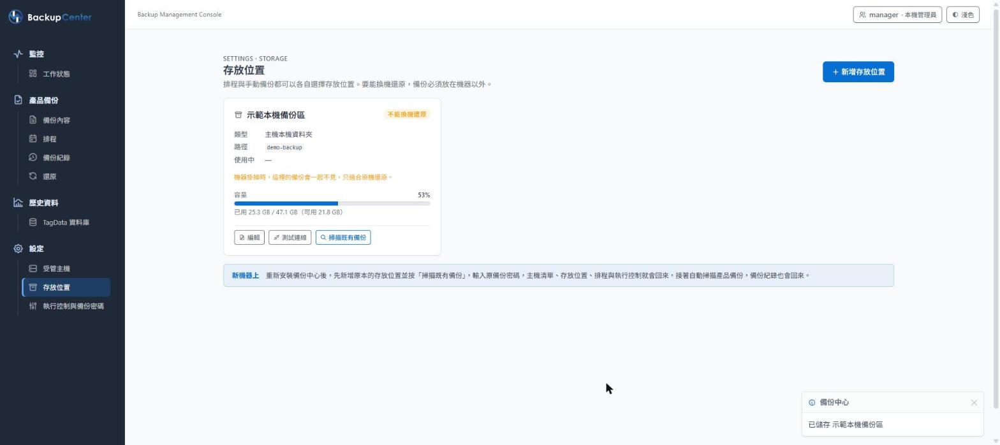

存放位置
備份檔要存放的地方。支援主機本機資料夾、網路共用資料夾（SMB、NFS）、FTP、FTPS、SFTP。要能換機還原，備份必須放在機器以外。只有備份中心存取存放位置，VL、DG、Agent 只要能連到備份中心。
新增主機本機資料夾

- 按「新增存放位置」。
- 填「名稱」（例：示範本機備份區），「類型」選「主機本機資料夾」。
- 「路徑」填子資料夾名稱，例如
demo-backup；實際位置在備份中心安裝目錄的storage/local底下。 - 保持「啟用」勾選，按「測試連線」，看到「測試成功」與容量。
- 按「儲存」。
清單出現這個位置，顯示類型、路徑、容量與「不能換機還原」標示。
本機資料夾會跟機器一起損壞，存在這裡的備份只適合原機還原，也不能用來同步備份中心自己的設定。正式環境請另外設定網路存放位置。
新增網路共用資料夾（SMB、NFS）
- SMB 路徑
\\主機\共用名稱\子資料夾；由備份中心以 SMB 3.0 掛載。- SMB 帳號／密碼／網域
- 有寫入權限的帳號；網域選填。
- NFS 路徑
主機:/匯出路徑；由備份中心掛載。
- 「類型」選「網路共用資料夾（SMB）」或「網路共用資料夾（NFS）」。
- 填路徑；SMB 另填帳號、密碼與網域。
- 按「測試連線」確認可寫入，按「儲存」。
清單顯示「可寫入」與容量；帳號旁的密碼一律遮罩顯示。
失敗時先查
- 測試失敗：確認共用資料夾路徑、帳號的寫入權限與防火牆。
新增 FTP、FTPS、SFTP
- 主機／Port
- 伺服器名稱或位址，例如
nas.example.local；Port 留空用預設值。 - 伺服器上的資料夾
- 從伺服器根目錄算起，例如
/backup，不存在時自動建立。 - 帳號／密碼
- SFTP 也可以貼私鑰登入，私鑰密語選填。
- 信任自簽憑證（FTPS）
- 第一次連線記下憑證指紋，之後指紋不同就拒絕連線。
- 主機金鑰指紋（SFTP）
- 按「測試連線」顯示這次看到的指紋，儲存後記下；之後不同就拒絕連線。
- 「類型」選 FTP、FTPS（明確 TLS）或 SFTP。
- 填主機、Port、資料夾、帳號與密碼（或 SFTP 私鑰）。
- 按「測試連線」，核對畫面顯示的指紋是否為你的伺服器，再按「儲存」。
上傳先放在備份中心暫存，完成後才傳到伺服器；還原時先下載回備份中心。
FTP 的帳密未加密，會以明文送出（備份檔本身已用備份密碼加密）；可以的話請改用 FTPS 或 SFTP。伺服器確實換過金鑰或憑證時，才在編輯視窗按「清除指紋」。
失敗時先查
- 連線被拒並提示指紋不同：伺服器金鑰或憑證變了；確認是正常更換後才清除指紋。
測試連線、容量與編輯

- 可寫入／可連線
- 測試通過。
- 連不到
- 連線失敗，滑鼠移到標示上看原因。
- 不能換機還原
- 本機資料夾。
- 已停用
- 不能選來備份。
- 容量
- 已用／總量與百分比；75% 以上變黃、90% 以上變紅。
- 按卡片上的「測試連線」重新檢查。
- 按「編輯」修改設定；密碼留空表示不變更；取消「啟用」可暫停使用。
確認位置可寫入且空間足夠。
失敗時先查
- 顯示「容量：無法取得」：伺服器不提供容量查詢，不影響備份。
掃描既有備份
- 按「掃描既有備份」。
- 按「掃描備份並重建紀錄」：列出這個位置上所有產品備份與 TagData 備份點的說明檔，資料庫沒有的加入並標「掃描找回」，檔案不在的標「檔案遺失」，對不到受管主機的標「未登記的主機」。
- 若找到備份中心自己的設定，請改走第 12 章的新機器還原。
畫面顯示新增、重新對應主機、未登記主機與檔案遺失的筆數；到「備份紀錄」與「TagData 資料庫」查看。